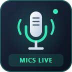
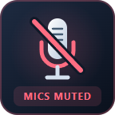

Press to mute every available Windows microphone. Press again to unmute every microphone, including microphones muted individually before using this button.


MICS LIVE means every available microphone is unmuted. MICS MUTED means every microphone has confirmed mute. MIXED MICS means some are muted and others are live. MIC ERROR means a command failed or a state could not be read. NO MIC means there are no available capture devices.
While mute is on, newly connected microphones are also muted, including while this button's page is hidden. Changes made elsewhere remain visible. Pressing from mixed state mutes all; if an earlier global mute command is still on, the next press unmutes all.
Controls microphone endpoint mute only. Speakers remain unchanged. App-specific and hardware controls can have separate states. No audio is recorded.